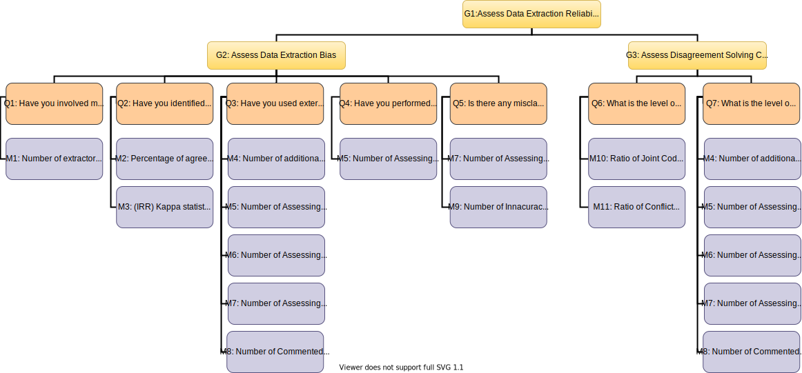

What are open SLRs?
- Open Systematic Literature Reviews: A Formal Definition
- W3C Annotations Model
- GQM schema: goals, metrics and queries for auditability
GQM for auditing (click on the desired metric):
ABOUT this guided tour:
This is a GraphGist created to show the Open SLR and the Data Extraction auditability concepts. This GraphGist is available at Github. In addition, it can be "played" as a guided tour into Neo4j. Copy and paste the following command in your Neo4j Browser:
:play https://iker.github.io/OpenSLR/oslr_guide.html
For security reasons, Neo4j’s standard config is set up to accept files hosted on guides.neo4j.com and localhost. To allow accessing Graph Gist guides from other places, you will need to change the whitelist in your $NEO4J_HOME/conf/neo4j.conf as shown below.
browser.remote_content_hostname_whitelist=*
Open Systematic Literature Reviews (OpenSLR)
The main aim of OpenSLRs is to ensure auditability of Data Extraction processes in Systematic Literature Reviews performance. For that purpose OpenSLRs:
- Follow the W3C Annotations Model
- Analyze data extraction process auditability by means of goals, metrics and queries (GQM).
A Formal Definition
SLR data set:
Let \( A= (P, R, D, K, E, B, C, V) \) be a SLR data set, where:
- \(P\) is a set of papers,
- \(R\) is a set of reviewers (a.k.a. extractors),
- \(D\) is a set of (internal or external) data checkers,
- \(K\) is a set of categories,
- \(E\) is a set of codes,
- \(B\) is a set of codebook tuples,
- \(C\) is a set of coding tuples,
- \(V\) is a set of validation tuples.
Codebook tuple:
A codebook tuple \(\lt category, code\gt \in B \) links a \(code \in E\) to a \( category \in K\) . Hence , \(B \subseteq (K \times E) \).
Coding tuple:
A coding tuple \(\lt codingId, paper, reviewer, code, quote\gt \in C \) accounts for the act of a \( reviewer \in R\) classifying a given \(paper \in P\) along a certain \(code \in E\) at hand on the grounds of some paragraphs or quotes found on the paper.
Validation tuple:
A validation tuple \(\lt checker, codingId, assessment, comment\gt \in V\) accounts for the act of a \( checker \in D\) assessing a coding tuple identified by \(codingId\).
(NOTATION) A tuple property method:
We denote a property value of a tuple instance through a point notation. For instance, \(t.paper\) refers to the value of the paper property of tuple \(t \in T\). It is worth to note that by tuple we mean any of the aforementioned tuple type. Namely, validation tuple, coding tuple, code book tuple.
A formal description of cypher queries:
This formal definition of SLR as sets allows us to describe Cypher queries formaly using the set theory. In this way we avoid the Cypher messiness when queries are big. For instance, the next cypher query is easily described as the cardinality or P, C, R, V and D subsets.
ANALYSIS OF THE OpenSLR:
This query colects statistics about the Graph Data Base. Concretely, the general information of the actual Open SLR is shown.
Formal description of the query's result:- \(NumberOfPapers = |P| \)
- \(NumberOfAnnotations = |C| \)
- \(NumberOfExtractors = |R| \)
- \(NumberOfValidations= |V| \)
- \(NumberOfCheckers= |D| \)
- \(NumberOfDBNodes\)
- \(NumberOfDBRelations\)
MATCH (n), (primaryStudy:foaf__Document), ()-[p]-()
WITH COUNT(DISTINCT primaryStudy) as numberOfPapers, count(DISTINCT n) as NumberOfDBNodes, count(DISTINCT p) as NumberOfDBRelations
MATCH ({uri:'http://www.w3.org/ns/oa#classifying'})<-[:oa__motivatedBy]-(ano:oa__Annotation)-[:dcterms__creator]->(extractor)
MATCH ({uri:'http://www.w3.org/ns/oa#assessing'})<-[:oa__motivatedBy]-(checks:oa__Annotation)-[:dcterms__creator]->(checker)
RETURN numberOfPapers, count(DISTINCT ano) as NumberOfAnnotations, COUNT(DISTINCT extractor) as numberOfExtractors, count(DISTINCT checks) as NumberOfValidations, COUNT(DISTINCT checker) as numberOfCheckers, NumberOfDBNodes, NumberOfDBRelations
W3C Annotations Model
We opt to align our efforts with the W3C Web Annotation recomendation in order to standardize SLR annotations.
Aims of the Model
The primary aim of the Web Annotation Data Model is to provide a standard description model and format to enable annotations to be shared between systems. Annotating is defined as the act of creating associations between distinct pieces of information.

The Web Annotation Data Model provides an extensible, interoperable framework for expressing annotations such that they can easily be shared between platforms, with sufficient richness of expression to satisfy complex requirements while remaining simple enough to also allow for the most common use cases.
The specification provides a specific JSON format for ease of creation and consumption of annotations based on the conceptual model that accommodates these use cases, and the vocabulary of terms that represents it.

GQM schema: goals, metrics and queries for auditability
The main aim of OpenSLRs is to ensure auditability of data extraction processes in Systematic Literature Reviews. We follow the Goal-Question-Metric (GQM) paradigm
As describes Wikipedia:
GQM, the initialism for "goal, question, metric", is an approach to software metrics [1] that has been promoted by Victor Basili of the University of Maryland, College Park and the Software Engineering Laboratory at the NASA Goddard Space Flight Center after supervising a Ph.D. thesis by Dr. David M. Weiss. Dr. Weiss' work was inspired by the work of Albert Endres at IBM Germany.
GQM defines a measurement model on three levels:
 [Image source: "GQM: How Do You Know Your Metrics Are Any Good", Huether 2013]
[Image source: "GQM: How Do You Know Your Metrics Are Any Good", Huether 2013]
M1: Number of extractors
TEXTUAL DESCRIPTION: Count the distinct paper reviewers (i.e. data extractors) in the OSLR. That is, count distinct extractors coding primary studies.
FORMAL DESCRIPTION: \(numberOfExtractors = |Extractors| \) where \(Extractors =\{ e \in R | \exists Anno \in C: Anno.reviewer =e\} \)
CYPHER QUERY:
MATCH ({uri:'http://www.w3.org/ns/oa#classifying'}) <-[:oa__motivatedBy]-(ANNO:oa__Annotation)-[:dcterms__creator]->(extractor)
RETURN COUNT(DISTINCT extractor ) AS numberOfExtractors
M2: Number of extractors
TEXTUAL DESCRIPTION: Work in progress!!!
FORMAL DESCRIPTION: Work in progress!!!
CYPHER QUERY:
MATCH (n) RETURN n LIMIT 1
M3: Number of extractors
TEXTUAL DESCRIPTION: Work in progress!!!
FORMAL DESCRIPTION: Work in progress!!!
CYPHER QUERY:
MATCH (n) RETURN n LIMIT 1
M4: Number of additional reviewers
TEXTUAL DESCRIPTION: List the number of distinct extractors coding each paper.
FORMAL DESCRIPTION: We want the \(\lt paper_i , numberOfExtractors_i \gt \) where \(paper_i \in P \), \(numberOfExtractors_i = |Extractors_i| \) and \(Extractors_i =\{ e \in R | \exists Anno \in C: Anno.reviewer =e \land Anno.paper = paper_i \} \)
CYPHER QUERY:
MATCH (PAPER:foaf__Document)
OPTIONAL MATCH ({uri:'http://www.w3.org/ns/oa#classifying'}) <-[:oa__motivatedBy]-(ANNO:oa__Annotation)-[:oa__hasTarget]-> ()-[:oa__hasSource]->(PAPER), (ANNO)-[:dcterms__creator]->(extractor)
RETURN PAPER.dcterms__title AS paper, COUNT(DISTINCT extractor ) AS numberOfExtractors
M5: Number of Assessing Annotations
FORMAL DESCRIPTION: For each \(\lt category, code\gt \in B\) we want tuples: \( \lt category, code, NumValidations_{code} \gt \) where \( NumValidations_{code} = |Validations_{code}| \) and \( Validations_{code} = \{ v \in V | \exists Anno \in C: Anno.code = code \land Anno.codingId = v.codingId\} \) For each \(\lt category, code\gt \in B\) we want tuples: \( \lt code, NumCodings_{code}, NumValidated_{code}, \frac{NumCodings_{code}}{NumValidated_{code}} \gt \) where \( NumCodings_{code} = |Codings_{code}| \) and \( Codings_{code} = \{ Anno \in C | Anno.code = code \} \) and \( Validations_{code} = \{ v \in V | \exists Anno \in C: Anno.code = code \land Anno.codingId = v.codingId\} \)
CYPHER QUERY:
MATCH (ano1:oa__Annotation)-[:oa__motivatedBy]->({uri:'http://www.w3.org/ns/oa#assessing'})
MATCH (ano1:oa__Annotation)-[:oa__hasTarget]->(ano2)
MATCH (ano2:oa__Annotation)-[:oa__motivatedBy]->({uri:'http://www.w3.org/ns/oa#classifying'})
MATCH (ano2:oa__Annotation)-[:oa__hasBody]->(a)-[:oa__hasBody]->(b)
RETURN b.rdf__value as code, COUNT(DISTINCT ano1) as totalAssessed;
MATCH (c:oa__Annotation)-[:oa__motivatedBy]->({uri:'http://www.w3.org/ns/oa#classifying'})
MATCH (c:oa__Annotation)-[:oa__hasBody]->(a)-[:oa__hasBody]->(b)
WITH COUNT(DISTINCT c) as totalExtractions, b.rdf__value as code, a
MATCH (ano1:oa__Annotation)-[:oa__motivatedBy]->({uri:'http://www.w3.org/ns/oa#assessing'})
MATCH (ano1:oa__Annotation)-[:oa__hasTarget]->(ano2)
MATCH (ano2:oa__Annotation)-[:oa__motivatedBy]->({uri:'http://www.w3.org/ns/oa#classifying'})
MATCH (ano2:oa__Annotation)-[:oa__hasBody]->(a)
WITH COUNT(DISTINCT ano1) as totalAssessed, totalExtractions, code
RETURN code, totalExtractions, totalAssessed, toFloat(totalAssessed)/totalExtractions as Ratio
M6: Number of Assessing Annotations as Agree
FORMAL DESCRIPTION: We want to know the ratio \(\frac{|AgreeValidations|}{|V|}\) where \(AgreeValidations = \{v \in V | v.assessment = agree\}\)
CYPHER QUERY:
MATCH (ano:oa__Annotation)-[:oa__motivatedBy]->({uri:'http://www.w3.org/ns/oa#assessing'})
WITH COUNT(DISTINCT ano) as totalAssessed
MATCH ({uri:'http://www.w3.org/ns/oa#assessing'})<-[:oa__motivatedBy]-(ano1:oa__Annotation)-[:oa__hasTarget]->(ano2:oa__Annotation)-[:oa__motivatedBy]->({uri:'http://www.w3.org/ns/oa#classifying'})
MATCH (ano1:oa__Annotation)-[:oa__hasBody]->({rdf__value:'agree'})
WITH COUNT(DISTINCT ano1) as agreeAnnotations, totalAssessed
RETURN agreeAnnotations, totalAssessed, toFloat(agreeAnnotations)/totalAssessed as Ratio
M7: Number of Assessing Annotations as Disagree
FORMAL DESCRIPTION: We want to know the ratio \(\frac{|DisagreeValidations|}{|V|}\) where \(DisagreeValidations = \{v \in V | v.assessment = disagree\}\)
CYPHER QUERY:
MATCH (ano:oa__Annotation)-[:oa__motivatedBy]->({uri:'http://www.w3.org/ns/oa#assessing'})
WITH COUNT(DISTINCT ano) as totalAssessed
MATCH ({uri:'http://www.w3.org/ns/oa#assessing'})<-[:oa__motivatedBy]-(ano1:oa__Annotation)-[:oa__hasTarget]->(ano2:oa__Annotation)-[:oa__motivatedBy]->({uri:'http://www.w3.org/ns/oa#classifying'})
MATCH (ano1:oa__Annotation)-[:oa__hasBody]->({rdf__value:'disagree'})
WITH COUNT(DISTINCT ano1) as disagreeAnnotations, totalAssessed
RETURN disagreeAnnotations, totalAssessed, toFloat(disagreeAnnotations)/totalAssessed as Ratio
M8: Number of Commented Assessing Annotations
TEXTUAL DESCRIPTION: Work in progress!!!
FORMAL DESCRIPTION: Work in progress!!!
CYPHER QUERY:
MATCH (n) RETURN n LIMIT 1
M9: Number of Innacuracies
TEXTUAL DESCRIPTION: Work in progress!!!
FORMAL DESCRIPTION: Work in progress!!!
CYPHER QUERY:
MATCH (n) RETURN n LIMIT 1
M10: Ratio of Joint Coding Agreement After Discussion
TEXTUAL DESCRIPTION: Work in progress!!!
FORMAL DESCRIPTION: Work in progress!!!
CYPHER QUERY:
MATCH (n) RETURN n LIMIT 1
M11: Ratio of Conflict Coding Annotations After Discussion
TEXTUAL DESCRIPTION: Work in progress!!!
FORMAL DESCRIPTION: Work in progress!!!
CYPHER QUERY:
MATCH (n) RETURN n LIMIT 1
OTHER METRIC: #CodedPS_per_day (TimeLine):
TEXTUAL DESCRIPTION:
Codings per day
CYPHER QUERY:
MATCH ({uri:'http://www.w3.org/ns/oa#classifying'})<-[:oa__motivatedBy]-(ano1:oa__Annotation)
WITH apoc.date.parse (ano1.dcterms__created, "d", "yyyy-MM-dd'T'HH:mm:ss.SSS'Z'") as d, COUNT(DISTINCT ano1) as numberOfCodingAnnotations
RETURN apoc.date.format (d,"d", "yyyy-MM-dd") as day, numberOfCodingAnnotations
ORDER BY d